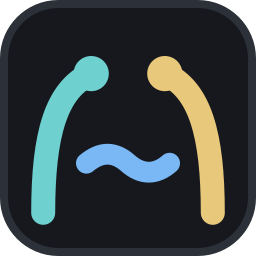

minato1受信箱
2一覧
3Actions
4ボード
,設定
Ctrl+⇧+Pパレット
n通知
u取り消す
?このキー一覧
jk次・前
hl列（一覧）
Space詳しくをめくる
r書く
d済み
sあとで
oブラウザ
i受信箱に入れる（一覧）
fFt状態・リポジトリ・タグ（受信箱）
gActions で開く
Alt+LLabels
Alt+AAssignees
Alt+SStatus
Alt+MMilestone
Alt+PPriority
Alt+RReviewers
Ctrl+EnterComment
Ctrl+⇧+Enter閉じる
Ctrl+PPreview
Ctrl+BCtrl+I太字・斜体
Ctrl+Kリンク
ボードHLカードを動かす
hl絞り込み・実行
R失敗だけ再実行
X止める
D手で走らせる
eログ
p元の PR